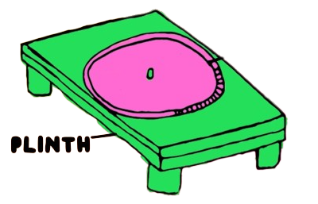
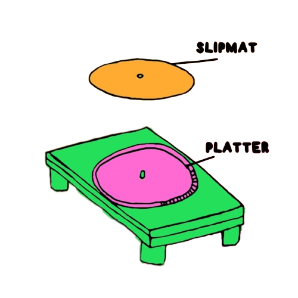
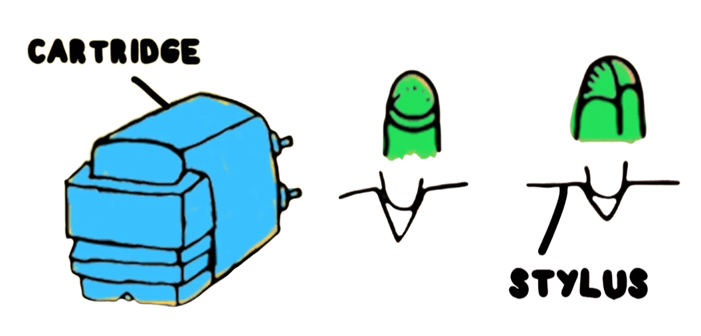

Table of Content
Intro
In the age of digital streaming and instant gratification, there's a certain charm and allure to the crackling sound of a vinyl record playing on a turntable. The vinyl turntable is more than just a music player – it's a piece of art, a mechanical marvel that has stood the test of time. In this exploration, we're taking a journey into the heart of audio nostalgia, unraveling the mechanics and components that come together to create the enchanting experience of spinning records.
The Plinth: The Foundation of Elegance
At the base of every vinyl turntable lies the plinth – the foundation upon which the entire setup rests. Crafted from a variety of materials like wood, acrylic, or metal, the plinth's purpose is twofold: to provide stability and to mitigate vibrations that could interfere with the delicate process of reproducing sound. The choice of material affects not only the turntable's aesthetic but also its resonance properties, influencing the overall sonic experience.
 by Julia Fletcher published on vinylmeplease.comThe Platter: Where Magic Meets Mechanics
Resting atop the spindle, the platter is where the vinyl record sits, ready to be brought to life. The platter's weight and material composition impact its ability to maintain a consistent rotational speed, crucial for accurate playback. Some platters are adorned with mats that further dampen vibrations and reduce static, creating an optimal environment for the stylus to navigate the grooves.
 by Julia Fletcher published on vinylmeplease.comThe Tonearm: Guiding the Journey
The tonearm is the bridge that connects the stylus to the record. This slender, often elegantly designed arm houses the cartridge, which carries the stylus responsible for reading the grooves. Precision engineering ensures that the tonearm moves with impeccable balance, allowing the stylus to glide smoothly across the record's surface, converting the physical vibrations into electrical signals.
by Julia Fletcher published on vinylmeplease.comThe Cartridge and Stylus: Delicate Dance of Sound
At the tip of the tonearm resides the cartridge, a cartridge that houses the stylus – a diamond-tipped needle. This tiny, unassuming piece of diamond is responsible for reading the contours of the record's grooves. As the stylus rides these grooves, it vibrates minutely, translating its movements into electrical signals that are then sent to the amplifier for amplification and, eventually, the speakers for auditory enjoyment.
 by Julia Fletcher published on vinylmeplease.comThe Drive System: From Manual to Modern
Vinyl turntables come in various drive systems, each with its own character. In the past, manual turntables required a gentle hand to initiate the rotation, while belt-driven turntables utilized an elastic belt to spin the platter. Direct-drive turntables, on the other hand, offered consistent speed and rapid startup. Each drive system has its merits, contributing to the distinct personality of the turntable.
The Sound Is in the Details
As the stylus delicately follows the record's grooves, it captures every nuance and imperfection – the subtle crackling, the warm tonality, the authentic texture. The vinyl turntable, with its intricate anatomy and meticulous craftsmanship, gives life to the music in a way that digital formats can't quite replicate. It's a testament to the art of audio reproduction, where technology meets the organic medium of vinyl.
In Conclusion
The vinyl turntable is more than a device; it's a conduit between the past and the present, a vessel for nostalgia and an emblem of artistic engineering. From the plinth to the stylus, each component plays a role in creating an auditory experience that transcends time. So, as you place a vinyl record on the platter, gently lower the stylus, and let the music flow, remember that you're not just playing a record – you're engaging with a symphony of mechanics and passion that continues to captivate audiophiles and music enthusiasts alike.